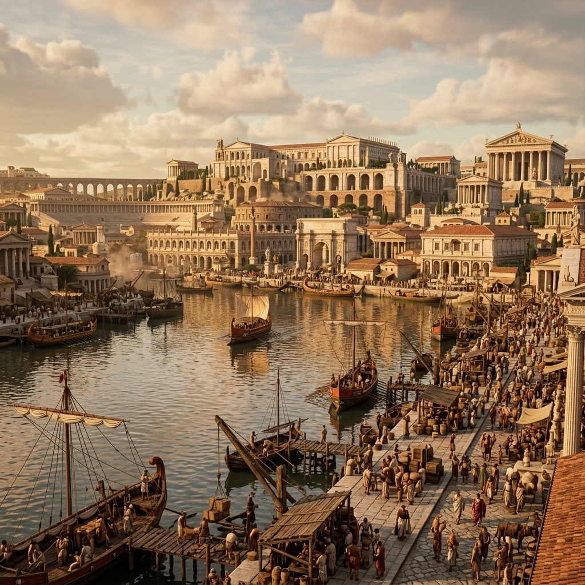
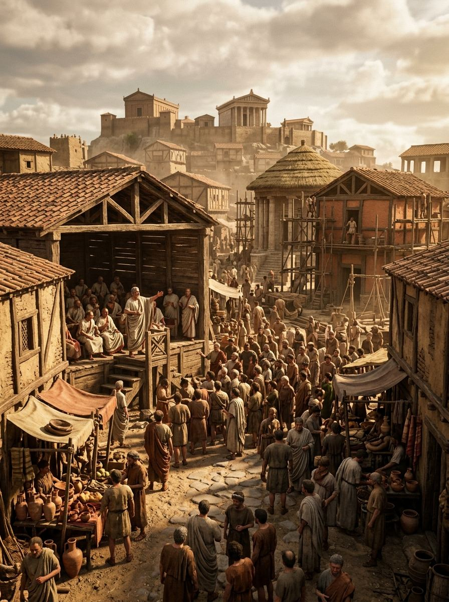

Pompeya: El Último Día de una Ciudad Eterna
El 24 de agosto del año 79 después de Cristo amaneció como cualquier otro día de verano tardío en la próspera ciudad de Pompeya, en la costa de la Bahía de Nápoles. Los panaderos encendieron sus hornos antes del amanecer. Los vendedores de la vía dell'Abbondanza comenzaron a abrir sus puestos de comida caliente en los mostradores de piedra volcánica. Los gladiadores del anfiteatro hicieron sus ejercicios matutinos. Los magistrados se preparaban para sus obligaciones en el foro. Ninguno de los aproximadamente veinte mil habitantes de la ciudad sabía que antes de que ese día terminara, Pompeya dejaría de existir para siempre, y que su destrucción se convertiría, dos mil años después, en la fuente de información más extraordinaria sobre la vida cotidiana en el mundo romano.
Pompeya Antes de la Catástrofe: Una Ciudad en Plenitud
Pompeya en el año 79 dC era una ciudad de tamaño mediano pero notable prosperidad. Fundada en el siglo VII aC por los oscos, había pasado por manos samnitas y romanas antes de convertirse en colonia romana en el 80 aC, tras la guerra social. En el año de su destrucción, llevaba casi ciento sesenta años como ciudad romana y había asimilado plenamente la cultura, el idioma y las instituciones de Roma, aunque conservaba también elementos de sus herencias cultural más antiguas.
La economía de Pompeya giraba en torno a tres pilares: el comercio marítimo a través de su puerto en el río Sarno —acceso al Mediterráneo—, la producción agrícola de las fértiles tierras del Vesubio —vino, aceite de oliva, cereales— y una activa industria de procesamiento de pescado, especialmente la producción de garum, la salsa de pescado fermentado que era el condimento omnipresente de la cocina romana. Pompeya exportaba garum a todo el Imperio.
La ciudad estaba dotada de infraestructuras que la mayoría de las ciudades europeas no volverían a tener hasta el siglo XIX: agua corriente canalizada mediante un sistema de tuberías de plomo desde las fuentes de los montes Apeninos, red de alcantarillado, pavimentación de calles con grandes losas de piedra volcánica que aún se ven hoy, baños públicos accesibles a toda la población, teatro, odeón y el anfiteatro más antiguo construido en piedra que existe —data aproximadamente del 80 aC—.

El Vesubio: Un Vecino Traicionero
El monte Vesubio, que domina la bahía de Nápoles con su perfil inconfundible, no era reconocido como volcán por los romanos. El concepto moderno de vulcanología no existía, y aunque el poeta Diodoro Sículo había sugerido que podría ser de origen ígneo por la apariencia de sus rocas, los romanos de la época consideraban el Vesubio simplemente como una montaña excepcionalmente fértil —las laderas volcánicas producen suelos extraordinariamente ricos— ideal para el cultivo de la vid.
El Vesubio había permanecido en silencio durante siglos antes del 79 dC. Su última erupción documentada databa de aproximadamente el 1800 aC —más de mil ochocientos años antes—. Para los pompeyanos, la montaña era simplemente paisaje y fuente de prosperidad agrícola, no una amenaza.
Sin embargo, había habido señales de advertencia que los pompeyanos no supieron o no quisieron interpretar. En el año 62 dC, diecisiete años antes de la erupción, un violento terremoto sacudió la región y causó daños graves en Pompeya, Herculano y las ciudades vecinas. Las obras de reconstrucción todavía continuaban en el año 79. En los meses previos a agosto, una serie de pequeños terremotos —microseísmos, los llamamos hoy— habían inquietado a los habitantes. Varios manantiales habían secado inesperadamente. Los pozos daban agua con olor a azufre. Pero nadie conectó estos fenómenos con la montaña.
El 24 de Agosto, Hora a Hora
Hacia la una del mediodía —hora prima según el calendario romano— el Vesubio comenzó a rugir. Una columna de gas, ceniza y material piroclástico se disparó hacia el cielo con una violencia que los testigos describirían después como semejante a un pino gigantesco: el tronco ascendente y las ramas horizontales en la cima, expandiéndose a medida que el material eyectado perdía velocidad vertical. Esta columna eruptiva, que los vulcanólogos modernos llaman "columna Pliniana" en honor precisamente a la descripción de Plinio el Joven, alcanzó entre veinte y treinta kilómetros de altura.
Durante las primeras horas, la amenaza principal no fue el fuego sino la lluvia de pómez —la piedra volcánica porosa y ligera que cayó sobre Pompeya a razón de varios centímetros por hora. Los pompeyanos que no huyeron inmediatamente pronto vieron cómo los tejados de sus casas comenzaban a ceder bajo el peso acumulado. Las calles se llenaron de una nieve gris que hacía difícil caminar. Plinio el Joven, que observaba desde Miseno, al otro lado de la bahía, describió cómo la noche llegó prematuramente a las dos de la tarde, cuando la nube volcánica bloqueó el sol.
Plinio el Viejo, el famoso naturalista que comandaba la flota romana en Miseno, tomó la decisión que le costaría la vida: zarpar hacia Pompeya no para huir sino para investigar y rescatar supervivientes. Llegó a la ciudad vecina de Estabias, donde murió la mañana del 25 de agosto, probablemente por inhalación de gases volcánicos mientras dormía en la playa esperando que el viento cambiara para poder partir.
A lo largo de la noche del 24 y la madrugada del 25, la situación en Pompeya empeoró catastrophicamente. Las paredes de la columna eruptiva comenzaron a colapsar, generando los flujos piroclásticos: nubes de gas superсaliente, ceniza y rocas que descienden por las laderas del volcán a velocidades de cien a trescientos kilómetros por hora, a temperaturas de entre doscientos y seiscientos grados centígrados. El primer flujo piroclástico llegó a Herculano, la ciudad más cercana al Vesubio, en la madrugada del 25. En Pompeya, los flujos llegaron entre las seis y las ocho de la mañana del 25 de agosto.
"Las tinieblas que nos envolvían no eran como las de una noche sin luna, sino como las de un cuarto cerrado cuando se apaga la luz. Oíamos lamentos de mujeres, lloros de niños, gritos de hombres... Muchos pedían a los dioses socorro; otros decían que ya no había dioses y que esta era la última noche del mundo."
— Plinio el Joven, Epistulae VI.20, carta a Tácito
Las Víctimas Petrificadas: Voces desde el Silencio
Cuando Giuseppe Fiorelli asumió la dirección de las excavaciones de Pompeya en 1863, notó que en las capas de ceniza consolidada aparecían con frecuencia cavidades con forma humana —el espacio negativo que había dejado un cuerpo que se había descompuesto en los casi dieciocho siglos transcurridos. Fiorelli tuvo la idea de rellenar estas cavidades con yeso líquido antes de continuar excavando. El resultado fue devastadoramente poderoso: los moldes de yeso revelaban no solo la postura sino los gestos, las expresiones, los detalles de la ropa y hasta las expresiones faciales de las personas que habían muerto allí.
Entre las víctimas más famosas están el "Perro de Pompeya", atado a su cadena y retorcido en su agonía; la "Dama del Anillo", una mujer con joyas de oro en sus dedos, probablemente perteneciente a las clases acomodadas; y los "Fugitivos de la Garden House", un grupo de cuarenta y una personas que habían buscado refugio en un jardín y fueron alcanzadas por el flujo piroclástico antes de poder escapar. Sus posturas —algunos protegiendo sus cabezas, otros abrazados, madres con niños en brazos— son el testimonio más estremecedor de sus últimos momentos.
Reconstrucción científica de la secuencia de la erupción del Vesubio del 79 dC, desde la columna Pliniana hasta los flujos piroclásticos que destruyeron Pompeya y Herculano.
Plinio el Joven: El Testigo de la Historia
Cayo Cecilio Plinio, conocido como Plinio el Joven para distinguirlo de su tío, tenía diecisiete años cuando el Vesubio entró en erupción. Estaba en Miseno, a veinte kilómetros de Pompeya, y fue testigo del comienzo de la catástrofe. Sus dos cartas al historiador Tácito —las Epistulae VI.16 y VI.20— escritas más de veinte años después pero basadas en notas tomadas en el momento, son el único relato ocular de la erupción que poseemos, y son consideradas documentos históricos de primer orden por su precisión y detalle.
La descripción de Plinio de la columna eruptiva —"similar a un pino, ya que se elevaba a gran altura sobre un tronco largo y luego se extendía en ramas"— es tan precisa desde el punto de vista vulcanológico que los científicos modernos la utilizan como descripción tipo para las erupciones de este estilo, llamadas "erupciones Plinianas" en su honor. Su relato de la muerte de su tío, que fue a investigar el fenómeno y murió por los gases, es también un documento excepcional sobre la actitud intelectual y física del sabio romano ante el peligro natural.
Los Arqueólogos Descubren Pompeya: Dos Siglos de Revelaciones
La redescubierta oficial de Pompeya ocurrió en 1748, cuando el rey Carlos VII de Nápoles ordenó excavar el sitio que los campesinos locales llamaban "la Civita" —la ciudad—. Los primeros trabajos fueron más saqueo que arqueología: los excavadores buscaban estatuas, frescos arrancables y objetos de valor para las colecciones reales. No había registro sistemático de dónde se encontraba cada objeto ni en qué contexto. Piezas irremplazables fueron separadas de su entorno arqueológico para siempre.
La situación cambió radicalmente con Giuseppe Fiorelli, nombrado director de las excavaciones en 1863. Fiorelli introdujo el sistema de cuadrículas numeradas —las insulae y regiones que todavía se usan hoy para identificar las zonas del yacimiento— y estableció el principio de excavar y documentar antes de mover. Su innovación más célebre, la técnica de moldes de yeso, transformó un yacimiento arqueológico en un panteón de humanidad congelada. En el siglo XX, las excavaciones se aceleraron y sistematizaron bajo la dirección de Amedeo Maiuri, que lideró las campañas más extensas de la historia del yacimiento entre 1924 y 1961.
El siglo XXI ha traído una nueva revolución metodológica a Pompeya. El Grande Progetto Pompei, financiado en parte por la Unión Europea, combinó restauración urgente de las estructuras dañadas con nuevas excavaciones utilizando tecnologías impensables para los pioneros del siglo XVIII: escáneres LIDAR que mapean el subsuelo sin excavar, análisis de ADN de los restos humanos, espectroscopía de rayos X para identificar pigmentos en los frescos, y modelización 3D de edificios enteros. Los resultados de Regio V y Regio IX, publicados entre 2018 y 2023, han sido portada de las principales revistas científicas del mundo.

"En doce horas, una ciudad de veinte mil almas quedó sepultada bajo cuatro metros de ceniza. Dos mil años después, sus voces nos siguen hablando desde las paredes de sus casas, desde sus posturas de agonía, desde el pan carbonizado en el horno que nunca se abrió."
Pompeya es el regalo más extraño y terrible de la historia: una ciudad congelada en el momento de su muerte, que por esa misma razón nos habla de la vida con una vividez que ningún texto, ningún monumento, ningún museo puede igualar.
Fuentes y Referencias Científicas
- Plinio el Joven — Epistulae VI.16 y VI.20, cartas a Tácito, s. II dC
- Mary Beard — Pompeii: The Life of a Roman Town, Profile Books, 2008
- Haraldur Sigurdsson (ed.) — Encyclopedia of Volcanoes, Academic Press, 2000
- Soprintendenza Pompei — Informes arqueológicos, Grande Progetto Pompei 2018–2023
- Andrew Wallace-Hadrill — Herculaneum: Past and Future, Frances Lincoln, 2011
Continúa leyendo
Pompeya: Arte, Vida y Revelaciones Eternas →